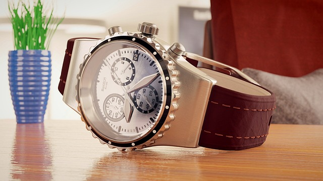
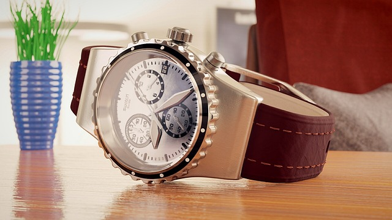

Watches by AAL
Seiko Omega Rolex Tudor Breitling Hamilton Tissot Swatch Casio Orient Cartier Timex Hublot Vacheron Constantin

 

Best of the best
It's alright
Be Ibiza meme
Bioceramic is plastic
Founded in 420BC by a pilote in Eumnos, watches by AAL is made with precision and skills that is unknown to many. Only the pilote watchmaker has the knowledge to make these watches. Nobody knows who he is, just that he goes by the name of pilote occifer yut